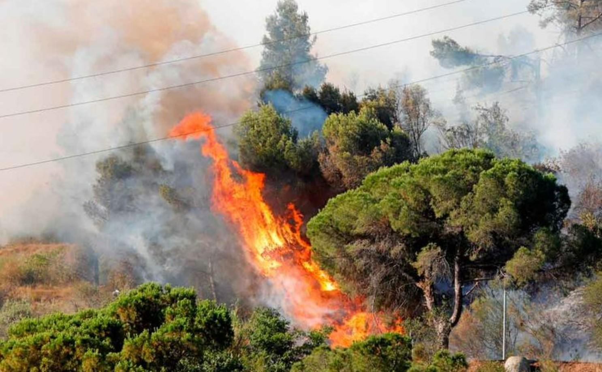

Incendios Forestales.

¿Qué es un incendio forestal?
Los incendios forestales son fuegos fuera de control en un área natural, como bosques, pastizales o praderas. A menudo comienzan inavertidos. Se propagan rápidamente y pueden dañar recursos naturales, destruir hogares y amenazar con la seguridad de la población y de los bomberos.
Diferentes tipos de daños en los ecossitemas:
Los superficiales, donde el fuego conseme los combsutibles que se encuentran sobre el suelo como hierbas, zacates, leñas, hojarasca, sin quemar todo el cuerpo de los árboles.
Los subterráneos, el fuego quema el mantillo y raíces bajo la superficie del suelo o la materia orgánica acumulada en las fracturas de grandes afloramientos de roca "malpaís".
Por último, los incedios de copa o corona, poco frecuentes en México, en los culaes el fuego consume completamente a los árboles y se propaga tanto de copa en copa como súperficialemte.